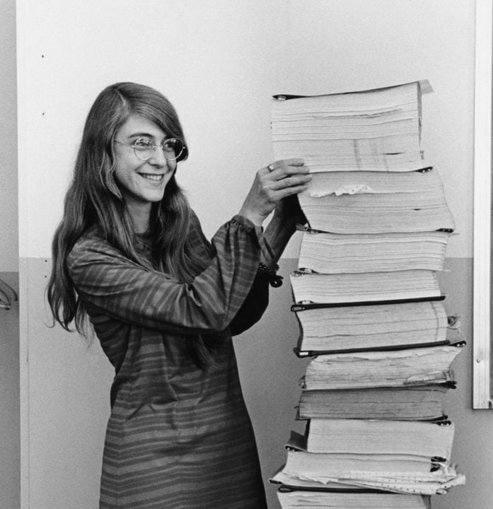

Ada Lovelace
Ada Lovelace (1815-1852) is considered the first computer programmer. Even though she wrote about a computer, the Analytical Engine, that was never built, she realized that the computer could follow a series of simple instructions and had applications beyond pure calculation.

Grace Hopper
Grace Brewster Murray Hopper (1906-1992) was a computer pioneer and naval officer. She earned a master’s degree (1930) and a Ph.D. (1934) in mathematics from Yale. Hopper is best known for her trailblazing contributions to computer programming, software development, and the design and implementation of programming languages.
Clara Shih
Clara Shih, the CEO of Salesforce AI and the founder of Hearsay Systems stands as a prominent figure in the tech world, donning various hats as an entrepreneur, investor, author, and dedicated family member…Clara's vision for responsible AI involves prioritizing ethical and secure solutions at Salesforce, leveraging the company's substantial expertise in data security. She strategically aligns AI solutions to deliver tangible business value, addressing operational bottlenecks, enhancing efficiency, and elevating quality across diverse business functions. (womentech network)

Margaret Hamilton
Margaret Elaine Hamilton (1936-) is an American computer scientist, systems engineer, and business owner. She was director of the Software Engineering Division of the MIT Instrumentation Laboratory, which developed on-board flight software for NASA's Apollo program.

Safra Catz
Safra A. Catz has served as chief executive officer of Oracle Corporation since 2014 and a member of the company’s board of directors since 2001.She previously served as president of Oracle and has also served as the company’s chief financial officer. Prior to being named president, Catz held various other positions since starting at Oracle in 1999. She currently serves as a director of The Walt Disney Company and previously served as a director of HSBC Holdings plc. (Oracle)